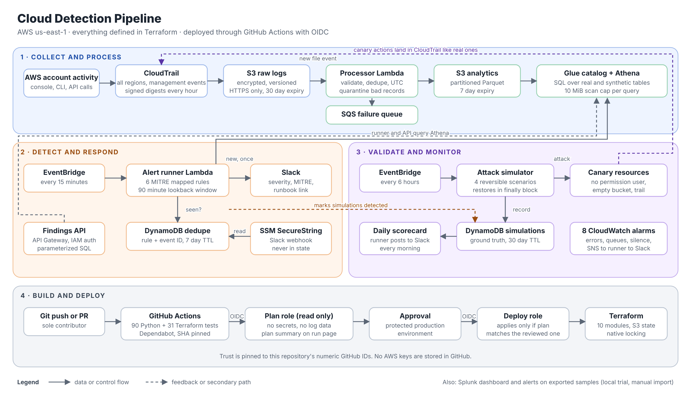
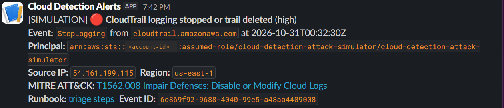
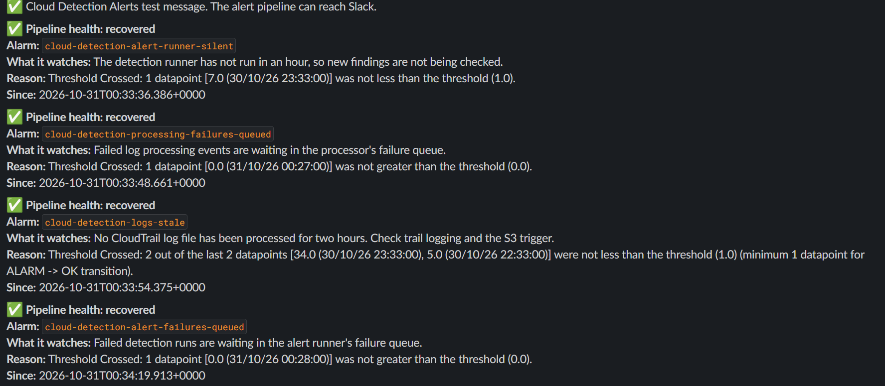

Cloud Detection Pipeline
An AWS threat detection pipeline that turns CloudTrail logs into queryable data, runs six MITRE ATT&CK detections every 15 minutes, alerts in Slack, and attacks itself on a schedule to prove the detections still work.
- CloudTrail
- Lambda
- Athena
- Glue
- DynamoDB
- EventBridge
- CloudWatch
- Terraform
- Python
- SQL
- GitHub Actions
- OIDC
Goal
Build the kind of detection pipeline a cloud security team runs in production: collect every account action, make it searchable, alert on risky behavior quickly, and continuously prove the alerts still fire.

Results
- 6 detections mapped to MITRE ATT&CK, each with a triage runbook: console login without MFA, root login, IAM policy attached, access key created, CloudTrail logging stopped, and S3 public access block removed.
- 2 of 2 simulated attacks caught on the first daily scorecard, with a 10 minute median time to detect.
- 144 of 144 CloudTrail log files verified intact with digest validation.
- 121 automated tests (90 Python, 31 Terraform) and an October AWS cost of $0.00.
Collect and process
A dedicated CloudTrail trail records management events from every region into an encrypted, versioned, private S3 bucket with signed hourly digests. Each new log file triggers a Lambda that validates events, quarantines bad records, removes duplicates, converts times to UTC, and writes Parquet partitioned by day and region. Failures land in an SQS queue. Glue and Athena make the data queryable with SQL under a 10 MiB scan cap per query.
Detect and respond
Every 15 minutes a scheduled Lambda runs all six rules in Athena and posts each new finding to Slack exactly once, with severity, MITRE technique, and a runbook link. A DynamoDB table records what was already sent, so overlapping runs never duplicate an alert, and a failed Slack post is retried on the next run. The Slack webhook lives in an encrypted SSM parameter and never enters code or Terraform state.
A read only findings API (API Gateway and Lambda) requires signed IAM credentials on every route and passes user input to Athena only as query parameters.
Validate and monitor
Every six hours an attack simulator performs one harmless, reversible action on canary resources (a user with no permissions, an empty bucket, or a brief pause of the trail) and always restores the original setting. Those actions land in CloudTrail like real ones, and a daily scorecard reports what was caught, missed, and how fast. Eight CloudWatch alarms watch the pipeline itself for errors, stuck queues, and silence.


Build and deploy
All infrastructure is defined in ten Terraform modules with remote state and locking in S3. Pull requests run tests and a read only Terraform plan. Pushes to main plan again, wait for my approval in a protected environment, then apply only if the changes match the plan I approved. GitHub gets one hour AWS credentials through OIDC, trusted only for this repository by its numeric IDs, so no AWS keys are stored anywhere.
What I learned
- CloudTrail's AssumeRoleWithWebIdentity events showed the exact OIDC subject GitHub sent, which fixed a failing deploy role and made the trust stricter.
- The plan match check refused a deploy when a KMS deny hid Lambda settings from the plan role. The safety check worked as designed, and the fix scoped the deny correctly.
- A Slack webhook pasted several times returned success but delivered nothing, so the runner now accepts only one exact webhook URL.